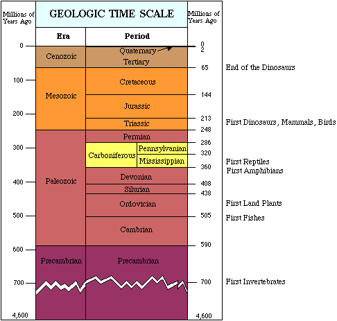

INTRODUCTION: THE NATURE OF SCIENCE AND
BIOLOGY
Table of Contents
Development
of the Theory of Evolution | The
Modern View of the Age of the Earth | Development
of the Modern View of Evolution
Darwinian Evolution |
The Diversity of
Life | Characteristics
of Living things | Levels
of Organization | Learning
Objectives
Terms | Review
Questions | Links |
References
Biology: The
Science of Our Lives | Back to
Top
Biology literally means "the study of life".
Biology is such a broad field, covering the minute workings of
chemical machines inside our cells, to broad scale concepts of
ecosystems and global climate change. Biologists study intimate
details of the human brain, the composition of our genes, and even
the functioning of our reproductive system. Biologists recently all
but completed the deciphering of the human genome, the sequence of
deoxyribonucleic acid (DNA) bases that may determine much of our
innate capabilities and predispositions to certain forms of behavior
and illnesses. DNA sequences have played major roles in criminal
cases (O.J. Simpson, as well as the reversal of death penalties for
many wrongfully convicted individuals), as well as the impeachment of
President Clinton (the stain at least did not lie). We are bombarded
with headlines about possible health risks from favorite foods
(Chinese, Mexican, hamburgers, etc.) as well as the potential
benefits of eating other foods such as cooked tomatoes. Informercials
tout the benefits of metabolism-adjusting drugs for weight loss. Many
Americans are turning to herbal remedies to ease arthritis pain,
improve memory, as well as improve our moods.
Can a biology book give you the answers to these
questions? No, but it will enable you learn how to sift through the
biases of investigators, the press, and others in a quest to
critically evaluate the question. To be honest, five years after you
are through with this class it is doubtful you would remember all the
details of meatbolism. However, you will know where to look and maybe
a little about the process of science that will allow you to make an
informed decision. Will you be a scientist? Yes, in a way. You may
not be formally trained as a science major, but you can think
critically, solve problems, and have some idea about what science can
and cannoit do. I hope you will be able to tell the shoe from the
shinola.
Science and the
Scientific Method | Back to Top
Science is an objective, logical, and repeatable
attempt to understand the principles and forces operating in the
natural universe. Science is from the Latin word, scientia, to
know. Good science is not dogmatic, but should be viewed as an
ongoing process of testing and evaluation. One of the hoped-for
benefits of students taking a biology course is that they will become
more familiar with the process of science.
Humans seem innately interested in the world we
live in. Young children drive their parents batty with constant "why"
questions. Science is a means to get some of those whys answered.
When we shop for groceries, we are conducting a kind of scientific
experiment. If you like Brand X of soup, and Brand Y is on sale,
perhaps you try Brand Y. If you like it you may buy it again, even
when it is not on sale. If you did not like Brand Y, then no sale
will get you to try it again.
In order to conduct science, one must know the
rules of the game (imagine playing Monopoly and having to
discover the rules as you play! Which is precisely what one does with
some computer or videogames (before buying the cheatbook). The
scientific
method is to be used as a guide that can
be modified. In some sciences, such as taxonomy
and certain types of geology, laboratory experiments are not
necessarily performed. Instead, after formulating a hypothesis,
additional observations and/or collections are made from different
localities.
Steps in the scientific method commonly include:
- Observation: defining the problem you wish to
explain.
- Hypothesis: one or more falsifiable
explanations for the observation.
- Experimentation: Controlled attempts to test
one or more hypotheses.
- Conclusion: was the hypothesis supported or
not? After this step the hypothesis is either modified or
rejected, which causes a repeat of the steps above.
After a hypothesis has been repeatedly tested, a
hierarchy of scientific thought develops. Hypothesis is the most
common, with the lowest level of certainty. A theory
is a hypothesis that has been repeatedly tested with little
modification, e.g. The Theory of Evolution. A Law is one of the
fundamental underlying principles of how the Universe is organized,
e.g. The Laws of Thermodynamics, Newton's Law of Gravity. Science
uses the word theory differently than it is used in the general
population. Theory to most people, in general nonscientific use, is
an untested idea. Scientists call this a hypothesis.
Scientific experiments are also concerned with
isolating the variables. A good science experiment does not
simultaneously test several variables, but rather a single variable
that can be measured against a control. Scientific controlled
experiments are situations where all factors are the same between two
test subjects, except for the single experimental variable.
Consider a commonly conducted science fair
experiment. Sandy wants to test the effect of gangsta rap music on
pea plant growth. She plays loud rap music 24 hours a day to a series
of pea plants grown under light, and watered every day. At the end of
her experiment she concludes gangsta rap is conducive to plant
growth. Her teacher grades her project very low, citing the lack of a
control group for the experiment. Sandy returns to her experiment,
but this time she has a separate group of plants under the same
conditions as the rapping plants, but with soothing Led Zeppelin
songs playing. She comes to the same conclusion as before, but now
has a basis for comparison. Her teacher gives her project a better
grade.
Theories Contributing to Modern
Biology | Back to Top
Modern biology is based on several great ideas, or
theories:
- The Cell Theory
- The Theory of Evolution by Natural
Selection
- Gene Theory
- Homeostasis
Robert
Hooke (1635-1703), one of the first
scientists to use a microscope to examine pond water, cork and other
things, referred to the cavities he saw in cork as "cells",
Latin for chambers. Mattias Schleiden (in 1838) concluded all plant
tissues consisted of cells. In 1839, Theodore Schwann came to a
similar conclusion for animal tissues. Rudolf Virchow, in 1858,
combined the two ideas and added that all cells come from
pre-existing cells, formulating the Cell
Theory. Thus there is a chain-of-existence
extending from your cells back to the earliest cells, over 3.5
billion years ago. The cell theory states that all organisms
are composed of one or more cells, and that those cells have arisen
from pre-existing cells.
|
Figure 1. James Watson (L) and Francis
Crick (R), and the model they built of the structure of
deoxyribonucleic acid, DNA. While a
model may seem a small thing, their development of the DNA
model fostered increased understanding of how genes
work. Image from the Internet.
|

|
In 1953, American scientist James Watson and
British scientist Francis Crick developed the model for
deoxyribonucleic
acid (DNA), a chemical that had (then)
recently been deduced to be the physical carrier of inheritance.
Crick hypothesized the mechanism for DNA replication and further
linked DNA to proteins,
an idea since referred to as the central dogma. Information from DNA
"language" is converted into RNA
(ribonucleic acid) "language" and then to the "language" of proteins.
The central dogma explains the influence of heredity (DNA) on the
organism (proteins).
Homeostasis is the maintainence of a dynamic range
of conditions within which the organism can function. Temperature,
pH, and energy are major components of this concept. Theromodynamics
is a field of study that covers the laws governing energy
transfers, and thus the basis for life on earth. Two major laws are
known: the conservation
of matter and energy, and entropy.
These will be discussed in more detail in a later chapter. The
universe is composed of two things: matter (atoms, etc.) and
energy.
These first three theories are very accepted by
scientists and the general public. The theory of evolution is well
accepted by scientists and most of the general public. However, it
remains a lightening rod for school boards, politicians, and
television preachers. Much of this confusion results from what the
theory says and what it does not say.
Development of the
Theory of Evolution | Back to
Top
Modern biology is based on several unifying
themes, such as the cell theory, genetics and inheritance, Francis
Crick's central dogma of information flow, and Darwin and Wallace's
theory of evolution by natural
selection. In this first unit we will
examine these themes and the nature of science.
The Ancient Greek philosopher Anaxiamander
(611-547 B.C.) and the Roman philosopher Lucretius (99-55 B.C.)
coined the concept that all living things were related and that they
had changed over time. The classical science of their time was
observational rather than experimental. Another ancient Greek
philosopher, Aristotle
developed his Scala Naturae, or Ladder of Life, to explain his
concept of the advancement of living things from inanimate matter to
plants, then animals and finally man. This concept of man as the
"crown of creation" still plagues modern evolutionary biologists (See
Gould, 1989, for a more detailed discussion).
Post-Aristotlean "scientists" were constrained by
the prevailing thought patterns of the Middle Ages -- the inerrancy
of the biblical book of Genesis and the special creation of the world
in a literal six days of the 24-hour variety. Archbishop James Ussher
of Ireland, in the late 1600's calculated the age of the earth based
on the geneologies from Adam and Eve listed in the biblical book of
Genesis. According to Ussher's calculations, the earth was formed on
October 22, 4004 B.C. These calculations were part of Ussher's book,
History of the World. The chronology he developed was taken as
factual, and was even printed in the front pages of bibles. Ussher's
ideas were readily accepted, in part because they posed no threat to
the social order of the times; comfortable ideas that would not upset
the linked applecarts of church and state.
|
Figure 2. Archbishop James Ussher.
Image from the Internet.
|

|
Often new ideas must "come out of left field",
appearing as wild notions, but in many cases prompting investigation
which may later reveal the "truth". Ussher's ideas were comfortable,
the Bible was viewed as correct, therefore the earth must be
only 5000 years old.
Geologists had for some time doubted the "truth"
of a 5,000 year old earth. Leonardo
da Vinci (painter of the Last
Supper, and the Mona Lisa, architect and engineer)
calculated the sedimentation rates in the Po River of Italy. Da Vinci
concluded it took 200,000 years to form some nearby rock deposits.
Galileo, convicted heretic for his contention that the Earth was not
the center of the Universe, studied fossils
(evidence of past life) and concluded that they were real and not
inanimate artifacts. James
Hutton, regarded as the Father of modern
geology, developed the Theory of Uniformitarianism,
the basis of modern geology and paleontology. According to Hutton's
work, certain geological processes operated in the past in much the
same fashion as they do today, with minor exceptions of rates, etc.
Thus many geological structures and processes cannot be explained if
the earth was only a mere 5000 years old.
The Modern View of the Age of the Earth | Back
to Top
Radiometric age assignments based on the rates of
decay of radioactive isotopes,
not discovered until the late 19th century, suggest the earth is over
4.5 billion years old. The Earth is thought older than 4.5 billion
years, with the oldest known rocks being 3.96 billion years old.
Geologic time divides into eons, eroas, and smaller units. An
overview of geologic time may be obtained at http://www.ucmp.berkeley.edu/help/timeform.html.
|

|
|
Figure 3. The geologic time scale,
hilighting some of the firsts in the evolution of life. One
way to represent geological time. Note the break during the
precambrian. If the vertical scale was truly to scale the
precambrian would account for 7/8 of the graphic.
This image is from http://www.clearlight.com/~mhieb/WVFossils/GeolTimeScale.html.
|
Development of the
modern view of Evolution | Back to
Top
Erasmus
Darwin (1731-1802; grandfather of Charles
Darwin) a British physician and poet in the late 1700's, proposed
that life had changed over time, although he did not present a
mechanism. Georges-Louis
Leclerc, Comte de Buffon (pronounced
Bu-fone; 1707-1788) in the middle to late 1700's proposed that
species could change. This was a major break from earlier concepts
that species were created by a perfect creator and therefore could
not change because they were perfect, etc.
Swedish botanist Carl Linne (more popularly known
as Linneus,
after the common practice of the day which was to latinize names of
learned men), attempted to pigeon-hole all known species of his time
(1753) into immutable categories. Many of these categories are still
used in biology, although the underlying thought concept is now
evolution
and not immutability of species. Linnean hierarchical classification
was based on the premise that the species
was the smallest unit, and that each species (or taxon) belonged to a
higher category.
Linneus also developed the concept of
binomial
nomenclature, whereby scientists speaking
and writing different languages could communicate clearly. For
example Man in English is Hombre in Spanish, Mensch in
German, and Homo in Latin. Linneus settled on Latin, which
was the language of learned men at that time. If a scientist refers
to Homo, all scientists know what he or she means.
William
"Strata" Smith (1769-1839), employed by
the English coal mining industry, developed the first accurate
geologic map of England. He also, from his extensive travels,
developed the Principle of Biological Succession. This idea states
that each period of Earth history has its own unique assemblages of
fossils. In essence Smith fathered the science of stratigraphy, the
correlation of rock layers based on (among other things) their fossil
contents. He also developed an idea that life had changed over time,
but did not overtly state that.
Abraham Gottlob Werner and Baron Georges
Cuvier (1769-1832) were among the foremost
proponents of catastrophism,
the theory that the earth and geological events had formed suddenly,
as a result of some great catastrophe (such as Noah's flood). This
view was a comfortable one for the times and thus was widely
accepted. Cuvier eventually proposed that there had been several
creations that occurred after catastrophies. Louis
Agassiz (1807-1873) proposed 50-80
catastrophies and creations.
Jean
Baptiste de Lamarck (1744-1829) developed
one of the first theories on how species changed. He proposed the
inheritance
of acquired characteristics to explain,
among other things, the length of the giraffe neck. The Lamarckian
view is that modern giraffe's have long necks because their ancestors
progressively gained longer necks due to stretching to reach food
higher and higher in trees. According to the 19th century concept of
use and disuse the stretching of necks resulted in their development,
which was somehow passed on to their progeny. Today we realize that
only bacteria are able to incorporate non-genetic (nonheritable)
traits. Lamarck's work was a theory that plainly stated that life had
changed over time and provided (albeit an erroneous) mechanism of
change.
Additional information about the biological
thoughts of Lamarck is available by clicking here.
Charles Darwin, former divinity student and former
medical student, secured (through the intercession of his geology
professor) an unpaid position as ship's naturalist on the British
exploratory vessel H.M.S. Beagle. The voyage would provide Darwin a
unique opportunity to study adaptation
and gather a great deal of proof he would later incorporate into his
theory of evolution. On his return to England in 1836, Darwin began
(with the assistance of numerous specialists) to catalog his
collections and ponder the seeming "fit" of organisms to their mode
of existence. He eventually settled on four main points of a radical
new hypothesis:
- Adaptation: all organisms adapt to their
environments.
- Variation: all organisms are variable in their
traits.
- Over-reproduction: all organisms tend to
reproduce beyond their environment's capacity to support them
(this is based on the work of Thomas
Malthus, who studied how populations of
organisms tended to grow geometrically until they encountered a
limit on their population size).
- Since not all organisms are equally well
adapted to their environment, some will survive and reproduce
better than others -- this is known as natural
selection. Sometimes this is also
referred to as "survival of the fittest". In reality this merely
deals with the reproductive success of the organisms, not solely
their relative strength or speed.
Unlike the upper-class Darwin, Alfred
Russel Wallace (1823-1913) came from a
different social class. Wallace spent many years in South America,
publishing salvaged notes in Travels on the Amazon and Rio
Negro in 1853. In 1854, Wallace left England to study the natural
history of Indonesia, where he contracted malaria. During a fever
Wallace managed to write down his ideas on natural
selection.
In 1858, Darwin received a letter from Wallace, in
which Darwin's as-yet-unpublished theory of evolution and adaptation
was precisely detailed. Darwin arranged for Wallace's letter to be
read at a scientific meeting, along with a synopsis of his own ideas.
To be correct, we need to mention that both Darwin and Wallace
developed the theory, although Darwin's major work was not published
until 1859 (the book On
the Origin of Species by Means of Natural
Selection, considered by many as one of
the most influential books written [follow the hyperlink to view
an online version]). While there have been some changes to the
theory since 1859, most notably the incorporation of genetics and DNA
into what is termed the "Modern Synthesis" during the 1940's, most
scientists today acknowledge evolution as the guiding theory for
modern biology.
Recent revisions of biology curricula stressed the
need for underlying themes. Evolution serves as such a universal
theme. An excellent site devoted to Darwin's thoughts and work is
available by clicking here.
At that same site is a timeline
showing many of the events mentioned above in their historical
contexts.
The Diversity of Life |
Back to Top
Evolutionary theory and the cell theory provide us
with a basis for the interrelation of all living things. We also
utilize Linneus' hierarchical classification system, adopting
(generally) five kingdoms of living organisms. Viruses,
as discussed later, are not considered living. Click here
for a table summarizing the five kingdoms. Recent studies suggest
that there might be a sixth Kingdom, the Archaea.
|
Figure 5. A simple phylogenetic
representation of three domains of life" Archaea, Bacteria
(Eubacteria), and Eukaryota (all eukaryotic groups:
Protista, Plantae, Fungi, and Animalia). Image from
Purves et al., Life: The Science of Biology, 4th
Edition, by Sinauer Associates (www.sinauer.com)
and WH Freeman (www.whfreeman.com),
used with permission.
|

|
|
Table 1. The Five Kingdoms.
|
|
|
Kingdom
|
Methods of
Nutrition
|
Organization
|
Environmental
Significance
|
Examples
|
|
Monera
(in the broadest sense,
including organisms usually placed in the Domain
Archaea).
|
Photosynthesis, chemosynthesis,
decomposer, parasitic.
|
Single-celled, filament, or
colony of cells; all prokaryotic.
|
Monerans play various roles in
almost all food chains, including
producer,consumer, and decomposer.
Cyanobacteria are important
oxygen producers.
Many Monerans also produce
nitrogen, vitamins, antibiotics, and are important
compoents in human and animal
intestines.
|
Bacteria (E. coli),
cyanobacteria (Oscillatoria), methanogens,
and thermacidophiles.
|
|
Protista
|
Photosynthesis, absorb food from
environment, or trap/engulf smaller
organisms.
|
Single-celled, filamentous,
colonial, and multicelled; all
eukaryotic.
|
Important producers in
ocean/pond food chain.
Source of food in some human
cultures.
Phytoplankton component that is
one of the major producers of oxygen
|
Plankton (both phytoplankton and
zooplankton), algae (kelp, diatoms,
dinoflagellates),and Protozoa (Amoeba,
Paramecium).
|
|
Fungi
|
Absorb food from a host or from
their environment.
All heterotrophic.
|
Single-celled, filamentous, to
multicelled; all eukaryotic.
|
Decomposer, parasite, and
consumer.
Produce antibiotics,help make
bread and alcohol.
Crop parasites (Dutch Elm
Disease, Karnal Bunt, Corn Smut, etc.).
|
Mushrooms (Agaricus
campestris, the commercial mushroom), molds,
mildews, rusts and smuts (plant parasites), yeasts
(Saccharomyces cerevisae, the brewer's
yeast).
|
|
Plantae
|
Almost all photosynthetic,
although a few parasitic plants are known.
|
All multicelled, photosynthetic,
autotrophs..
|
Food source, medicines and
drugs, dyes, building material, fuel.
Producer in most food
chains.
|
Angiosperms (oaks, tulips,
cacti),gymnosperms (pines, spuce, fir), mosses,
ferns,liverworts, horsetails (Equisetum, the
scouring rush)
|
|
Animalia
|
All heterotrophic.
|
Multicelled heterotrophs capable
of movement at some stage during their life history
(even couch potatoes).
|
Consumer level in most food
chains
(herbivores,carnivores,omnivores).
Food source, beasts of burden
and transportation, recreation, and
companionship.
|
Sponges, worms,molluscs,
insects, starfish,mammals, amphibians,fish, birds,
reptiles, and dinosaurs, and people.
|
|
Monera,
the most primitive kingdom, contain living organisms remarkably
similar to ancient fossils. Organisms in this group lack
membrane-bound organelles
associated with higher forms of life. Such organisms are known as
prokaryotes.
Bacteria (technically the Eubacteria)
and blue-green bacteria (sometimes called blue-green algae, or
cyanobacteria)
are the major forms of life in this kingdom. The most primitive
group, the archaebacteria,
are today restricted to marginal habitats such as hot springs or
areas of low oxygen concentration.
Protista
were the first of the eukaryotic
kingdoms, these organisms and all others have membrane-bound
organelles, which allow for compartmentalization and dedication of
specific areas for specific functions. The chief importance of
Protista is their role as a stem group for the remaining Kingdoms:
Plants, Animals, and Fungi. Major groups within the Protista include
the algae, euglenoids,
ciliates, protozoa,
and flagellates.
Fungi
are almost entirely multicellular
(with yeast, Saccharomyces cerviseae, being a prominent
unicellular
fungus), heterotrophic
(deriving their energy from another organism, whether alive or dead),
and usually having some cells with two nuclei (multinucleate,
as opposed to the more common one, or uninucleate)
per cell. Ecologically this kingdom is important (along with certain
bacteria) as decomposers and recyclers of nutrients. Economically,
the Fungi provide us with food (mushrooms; Bleu cheese/Roquefort
cheese; baking and brewing), antibiotics
(the first of the wonder drugs, penicillin, was isolated from a
fungus Penicillium), and crop parasites
(doing several billion dollars per year of damage).
Plantae
(click
here for more information about the
Plantae) include multicelled organisms
that are all autotrophic
(capable of making their own food by the process of photosynthesis,
the conversion of sunlight energy into chemical energy).
Ecologically, this kingdom is generally (along with photosynthetic
organisms in Monera and Protista) termed the producers,
and rest at the base of all food
webs. A food web is an ecological concept
to trace energy flow through an ecosystem.
Economically, this kingdom is unparalleled, with agriculture
providing billions of dollars to the economy (as well as the
foundation of "civilization"). Food, building materials, paper, drugs
(both legal and illegal), and roses, are plants or plant-derived
products.
Animalia
consists entirely of multicelluar heterotrophs that are all capable
(at some point during their life history) of mobility. Ecologically,
this kingdom occupies the level of consumers,
which can be subdivided into herbivore (eaters of plants) and
carnivores (eaters of other animals). Humans, along with some other
organisms, are omnivores (capable of functioning as herbivores or
carnivores). Economically, animals provide meat, hides, beasts of
burden, pleasure (pets), transportation, and scents (as used in some
perfumes).
Characteristics of
living things | Back to Top
Living things have a variety of common
characteristics.
- Organization. Living things exhibit a
high level of organization, with multicellular organisms being
subdivided into cells, and cells into organelles, and organelles
into molecules, etc.
- Homeostasis.
Homeostasis is the maintenance of a constant (yet also dynamic)
internal environment in terms of temperature, pH, water
concentrations, etc. Much of our own metabolic energy goes toward
keeping within our own homeostatic limits. If you run a high fever
for long enough, the increased temperature will damage certain
organs and impair your proper functioning. Swallowing of common
household chemicals, many of which are outside the
pH
(acid/base) levels we can tolerate, will likewise negatively
impact the human body's homeostatic regime. Muscular activity
generates heat as a waste product. This heat is removed from our
bodies by sweating. Some of this heat is used by warm-blooded
animals, mammals and birds, to maintain their internal
temperatures.
- Adaptation. Living things are suited to
their mode of existence. Charles Darwin began the recognition of
the marvellous adaptations all life has that allow those organisms
to exist in their environment.
- Reproduction and heredity. Since all
cells come from existing cells, they must have some way of
reproducing, whether that involves asexual
(no recombination of genetic material) or sexual
(recombination of genetic material). Most living things use the
chemical DNA (deoxyribonucleic acid) as the physical carrier of
inheritance and the genetic information. Some organisms, such as
retroviruses
(of which HIV
is a member), use RNA (ribonucleic acid) as the carrier. The
variation that Darwin and Wallace recognized as the wellspring of
evolution and adaptation, is greatly increased by sexual
reproduction.
- Growth and development. Even
single-celled organisms grow. When first formed by cell division,
they are small, and must grow and develop into mature cells.
Multicellular organisms pass through a more complicated process of
differentiation and organogenesis (because they have so many more
cells to develop).
- Energy acquisition and release. One
view of life is that it is a struggle to acquire energy (from
sunlight, inorganic chemicals, or another organism), and release
it in the process of forming ATP
(adenosine triphosphate).
- Detection and response to
stimuli
(both internal and external).
- Interactions. Living things interact
with their environment as well as each other. Organisms obtain raw
materials and energy from the environment or another organism. The
various types of symbioses
(organismal interactions with each other) are examples of this.
Levels of Organization |
Back to Top
Biosphere:
The sum of all living things taken in conjunction with their
environment. In essence, where life occurs, from the upper reaches of
the atmosphere to the top few meters of soil, to the bottoms of the
oceans. We divide the earth into atmosphere
(air), lithosphere
(earth), hydrosphere
(water), and biosphere (life).
Ecosystem: The relationships of a smaller groups
of organisms with each other and their environment. Scientists often
speak of the interrelatedness of living things. Since, according to
Darwin's theory, organisms adapt to their environment, they must also
adapt to other organisms in that environment. We can discuss the flow
of energy through an ecosystem from photosynthetic autotrophs to
herbivores to carnivores.
Community:
The relationships between groups of different species. For example,
the desert communities consist of rabbits, coyotes, snakes, birds,
mice and such plants as sahuaro cactus (Carnegia gigantea),
Ocotillo, creosote bush, etc. Community structure can be disturbed by
such things as fire, human activity, and over-population.
Species: Groups of similar individuals who tend to
mate and produce viable, fertile offspring. We often find species
described not by their reproduction (a biological species) but rather
by their form (anatomical or form species).
Populations:
Groups of similar individuals who tend to mate with each other in a
limited geographic area. This can be as simple as a field of flowers,
which is separated from another field by a hill or other area where
none of these flowers occur.
Individuals: One or more cells characterized by a
unique arrangement of DNA "information". These can be unicellular or
multicellular. The multicellular individual exhibits specialization
of cell types and division of labor into tissues, organs, and organ
systems.
Organ
System: (in multicellular organisms). A
group of cells, tissues, and organs that perform a specific major
function. For example: the cardiovascular
system functions in circulation of
blood.
Organ:
(in multicellular organisms). A group of cells or tissues performing
an overall function. For example: the heart
is an organ that pumps blood within the cardiovascular
system.
Tissue:
(in multicellular organisms). A group of cells performing a specific
function. For example heart
muscle tissue is found in the heart and
its unique contraction properties aid the heart's functioning as a
pump. .
Cell: The fundamental unit of
living things. Each cell has some sort of hereditary material (either
DNA or more rarely RNA), energy acquiring chemicals, structures, etc.
Living things, by definition, must have the metabolic chemicals plus
a nucleic acid hereditary information molecule.
Organelle: A subunit of a cell, an organelle is
involved in a specific subcellular function, for example the
ribosome
(the site of protein synthesis) or mitochondrion
(the site of ATP generation in eukaryotes).
Molecules, atoms, and subatomic particles: The
fundamental functional levels of biochemistry.
|
Figure 12. Organization levels of life,
in a graphic format. Images from Purves et al.,
Life: The Science of Biology, 4th Edition, by Sinauer
Associates (www.sinauer.com)
and WH Freeman (www.whfreeman.com),
used with permission.
|
|
|
It is thus possible to study biology at many
levels, from collections of organisms (communities), to the inner
workings of a cell (organelle).
- Name the special molecule that sets living things apart from
the nonliving world and be able to explain why this molecule is
important.
- The cell is considered to be the basic living unit. Be able to
distinguish between single-celled organisms and multicelled
organisms.
- Be able to arrange in order, from smallest to largest, the
levels of organization that occur in nature and to write a brief
description of each.
- What does the term metabolism mean to the cell and the
organism.
- Organisms use a molecule known as ATP to transfer chemical
energy from one molecule to another. Why is this essential for
living things to exist.
- Homeostasis is defined as a state in which the conditions of
an organism's internal environment are maintained within tolerable
limits. What mechanisms in your body are involved with
homeostasis?
- Reproduction is the means by which each new organism arises.
Why is this an essential characteristic of life?
- How are DNA and cellular reporoduction linked in the process
of inheritance?
- A trait that assists an organism in survival and reproduction
in a certain environment is said to be adaptive. What sorts of
adaptive traits do you have? How do they aid your survival?
- List the five kingdoms of life that are currently recognized
by most scientists; tell generally what kinds of organisms are
classified in each kingdom, and discuss the new ideas about
Domains and how they may alter the five kingdom approach.
- Arrange in order, from the fewer to the greater numbers of
organisms included, the following categories of classification:
class, family, genus, kingdom, order, phylum, and species.
- Explain what the term biological diversity means to you, and
speculate about what caused the great diversity of life on
Earth.
- Define natural selection and briefly describe what is
occurring when a population is said to evolve.
- Outline a set of steps that might be used in the scientific
method of investigating a problem.
- Explain why a control group is used in an experiment.
- Define what is meant by a theory; cite an actual example that
is significant to biology.
- Which of these scientific terms has the greatest degree of
certainty? a)
hypothesis; b)
theory; c) law;
d) guess.
- The purpose of a control in a scientific experiment is to ___.
a) provide a basis of
comparison between experimental and nonexperimental; b)
indicate the dependent variable; c)
indicate the independent variable; d)
provide a baseline from which to graph the data.
- Which of these theories is not a basis for modern biology? a)
evolution; b) creationism; c) cell theory; d) gene theory.
- The molecule that is the phsical carrier of inheritance is
known as ___. a) ATP; b) RNA; c) DNA; d) NADH
- Bacteria belong to the taxonomic kingdom ____. a) Plantae; b)
Protista; c) Animalia; d) Fungi; e) Monera
- Mushrooms belong to which of these taxonomic kingdoms? a)
Plantae; b) Protista; c) Animalia; d) Fungi; e) Monera
- Papaver somniferum, the opium poppy, belongs to which
of these taxonomic kingdoms? a) Plantae; b) Protista; c) Animalia;
d) Fungi; e) Monera
- The sum of all energy transfers within a cell is known as
_____. a) photosynthesis; b) cellular respiration; c) metabolism;
d) replication; e) conjugation.
- The molecule that is the energy coin of the cell is ___. a)
ATP; b) RNA; c) DNA; d) NADH
- Which of these is NOT a living organism? a) cactus; b) cat; c)
algae; d) virus; e) yeast
- Which of the following is the least inclusive (smallest) unit
of classification? a) kingdom; b) species; c) genus; d) class; e)
phylum
- The scientist(s) credited with developing the theory of
evolution by natural selection were ____. a) James Watson and
Francis Crick; b) Aristotle and Lucretius; c) Charles Darwin and
Alfred Wallace; d) Robert Hooke and Rudolph Virchow; e) James
Watson and Charles Darwin
- When an organism consists of a single cell, the organism is
referred to as ___. a) uninucleate; b) uniport; c) unisexual; d)
unicellular
- According to science, the Earth is ___ years old. a) 4.5
billion; b) 4.5 million; c) 10 billion; d) 10,000; e) 450
million
- Which of these is not an economic use of bacteria? a) food; b)
biotechnology; c) mushrooms; d) food spoilage
- History
of the Light Microscope
- Discovery,
Chance and the Scientific Method Read an case study, in a way,
of how to apply the scientific method. This page was developed for
the Access Excellence site.
- Darwin's
Origin of Species Available to cure all insomniacs! Although
written in the dry style of the 1850s, this book has caused a
revolution in biological thought. It has also been misapplied to
social darwinism and used to justify slavery, racial purity, and
the Final Solution. Read what Darwin actually said, not what
pundits say he saud.
- Enter
Evolution UCMP Berkeley
- The Five
Kingdoms A table summarizing the kingdoms of living
things.
- The Bad Bug
Book US FDA information on bacterially caused diseases.
- Bacteria:
Life History and Ecology UCMP Berkeley
- Introduction
to the Bacteria UCMP Berkeley
- Introduction
to the Cyanobacteria UCMP Berkeley
- Cyanobacteria
Morphology and Introduction
to the Archaea Life's extremists. . . These University of
California Berkeley sites offer some pertinent information about a
group of living organisms that resemble some of the earliest known
fossils.
- Bowling
Green State University Center for Algal Microscopy...Images
and more, concentrating on diatoms.
- Introduction
to the Dinoflagellata (from UCMP in Berkeley)
- Dinoflagellates
Palynologist Andrew MacRae at the University of Calgary has built
a site with loads of SEMs (scanning electron microscope pictures)
and info on dinoflagellates, their anatomy, and connections
between fossil and living forms.
- People's
Use of Algae Botany Dept., UBC.
- Nathan's
Fungi Thumbnails Plenty of pictures of fungi.
- Fungi Perfecti Online A
commercial site with a great many images and info about the fun in
fungi.
- Fungi:
Life History and Ecology UCMP Berkeley
- Introduction
to the Fungi UCMP Berkeley
- Tom
Volk's Fungi Want a well illustrated site for fungi? This is
the place. Loads of images and even some lecture materials.
- Introduction
to the Plantae UCMP Berkeley
- Plant
Divisions (from UCMP in Berkeley) An excellent introduction to
the plants.
- Land
Plants Online You can learn more about the various plant
groups from this well organized site. Follow links to look up the
structure and geologic history of any major plant group of your
choice.
- Non-Flowering
Plant Family Access Page Sorted by family on the non-flowering
plants. Thumbnail photos are linked to larger versions. This site
is a great educational resource maintained by Gerald D. Carr.
- Introduction
to the Bryophyta: The Mosses This University of California
Museum of Paleontology site offers a systematic perspective to the
mosses by providing succinct information as well as links to a
number of pertinent sites.
- Introduction
to the Anthocerotophyta: The hornworts This University of
California Museum of Paleontology site offers a systematic
perspective to the hornworts by providing succinct information as
well as links to a number of pertinent sites.
- Encyclopedia of Plants
Scientific and common names for garden plants.
- Introduction
to the Lycophyta: Club mosses and Scale trees This University
of California Museum of Paleontology site offers a systematic
perspective to the lycophytes, their ecology, systematics, and
fossil record.
- Introduction
to the Sphenophyta: Yesterday's trees, today's horsetails This
University of California Museum of Paleontology site offers a
systematic perspective to the sphenophytes (Equisetum and
its extinct relatives), their ecology, systematics, and fossil
record.
- Comparisons
of Systems in the Animalia Tables comparing organ systems of
major animal phyla.
- Taxonomy of
Life - Kingdom Animalia
- Introduction
to the Metazoa: Animals, Animals, Animals! This University of
California Berkeley Museum of Paleontology site offers excellent
information about the evolution and diversity of various animal
groups.
Darwin, Charles R. 1859 On
the Origin of Species by Means of Natural
Selection. Available at
http://www.literature.org/Works/Charles-Darwin/origin/
Gould, Stephen J. 1989 Wonderful Life.
Text ©1992, 1994, 1997, 1999, 2000, 2001, 2002, by M.J. Farabee,
all rights reserved. Use for educational purposes is encouraged.
Back to Table of Contents
| Go To CHEMISTRY
I: ATOMS AND MOLECULES
Email: mj.farabee@emcmail.maricopa.edu
Last modified:
The URL of this page is:


{kind=link}